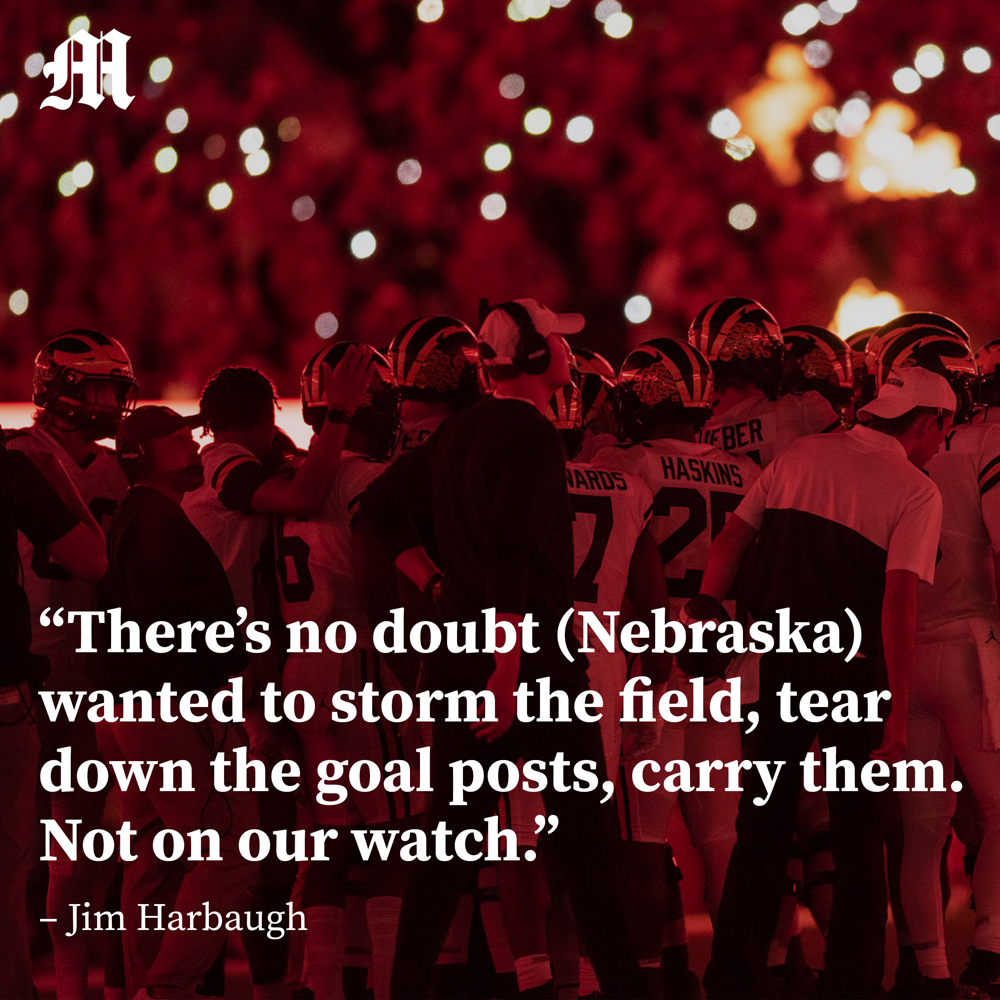
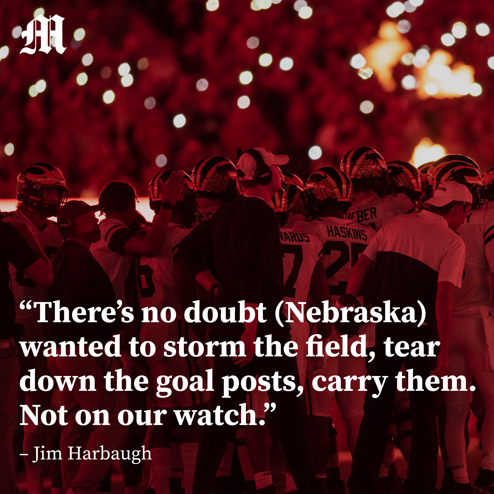

Projects
Language & Behavior for Large-Scale Breakthrough Lab
This semester I joined blablablab, which is objectively the reserach group with the coolest name at Michigan. I research how rhetorical frames impact engagement in Tweets about immigration and how the rhetorical frames in quote tweets and replies differ from the original tweet.
My research is a spin-off of this paper authored by the PhD student I work with and her advisors. We're aiming to publish our work in the spring of 2022.
I've done someo of my best data visualization work on this project and can't wait to share it!
The Michigan Daily
I joined The Michigan Daily on a whim freshman year and ended up managaging the paper's social media presence and newsletters from December 2020 to December 2021. Not really sure how that happened but I couldn't be happier.
To see my work in action follow us on Twitter (or our sports twitter if that's more your vibe), Facebook, Instagram and subscribe to our newsletters!
 
